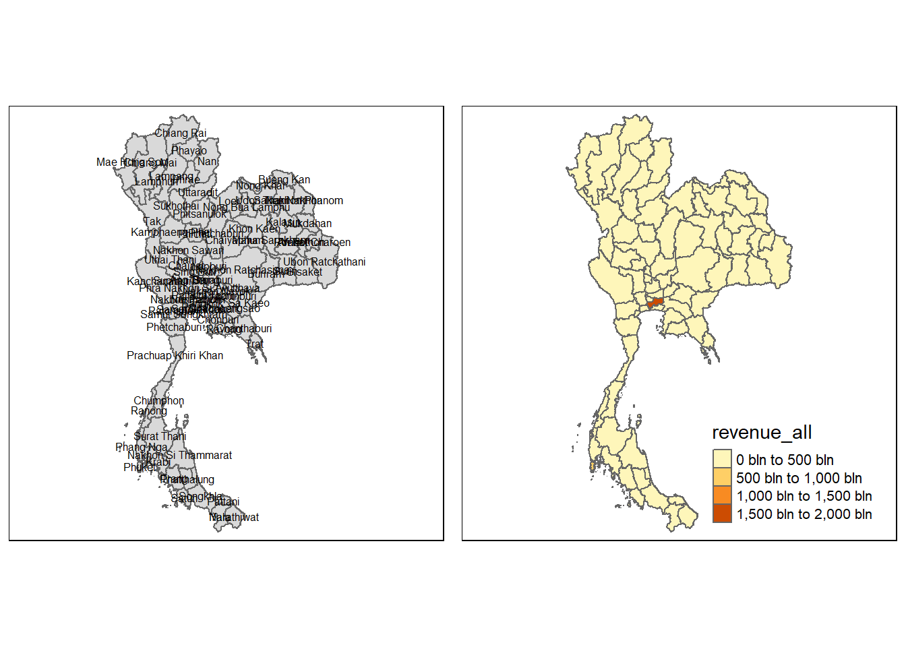
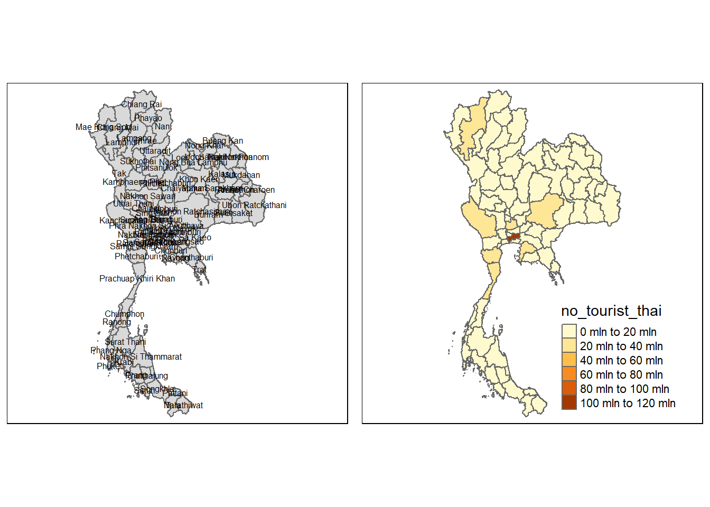
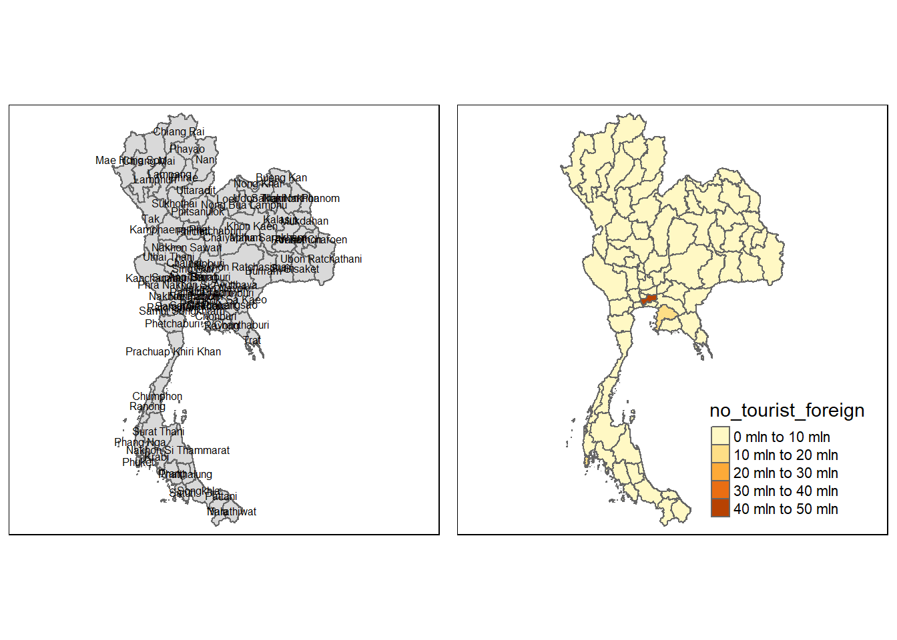
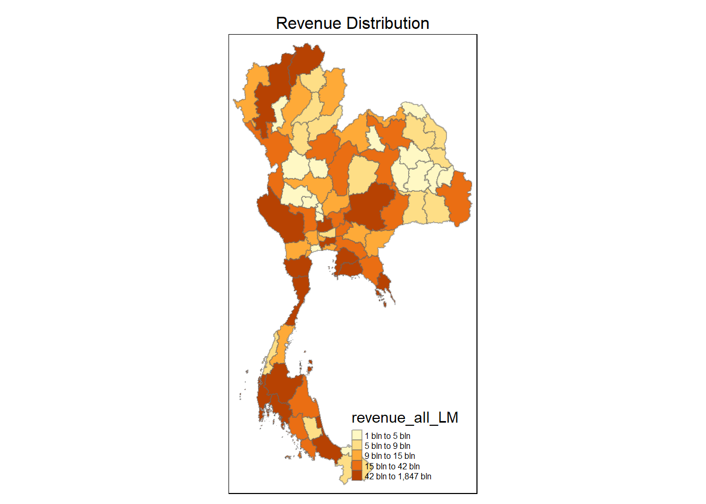
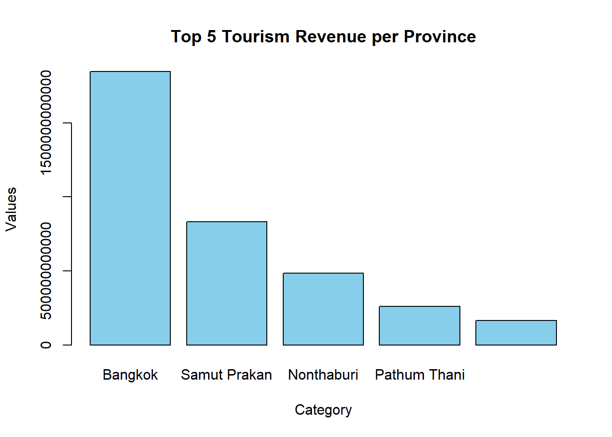

pacman::p_load(sf, spdep, tmap, tidyverse, knitr, ClustGeo,
ggpubr, cluster, factoextra, NbClust,
heatmaply, corrplot, psych, GGally, GWmodel,
ggstatsplot, Kendall, plotly, sfdep)Take-home Exercise 2
Take-home Exercise 2: Discovering Impact of COVID-19 on Thailand Tourism Economy at Province Level using Spatial and Spatio-temporal Statistics
1 Overview
1.1 Background
1.2 Objectives
In this analysis, we are interested to discover:
- If the key indicators of tourism economy of Thailand are independent from space and time
2 Getting Started
2.1 Installing and Loading R Packages
2.2 Importing Dataset
tourism <- read_csv("data/aspatial/thailand_domestic_tourism_2019_2023_ver2.csv") %>%
mutate(year = year(date))Rows: 30800 Columns: 7
── Column specification ────────────────────────────────────────────────────────
Delimiter: ","
chr (5): province_thai, province_eng, region_thai, region_eng, variable
dbl (1): value
date (1): date
ℹ Use `spec()` to retrieve the full column specification for this data.
ℹ Specify the column types or set `show_col_types = FALSE` to quiet this message.boundary <- st_read(dsn = "data/geospatial",
layer = "tha_admbnda_adm1_rtsd_20220121") %>%
st_transform(crs = 32647)Reading layer `tha_admbnda_adm1_rtsd_20220121' from data source
`C:\brigittatsai\ISSS626_AY2024-25_T1\Take-home_Ex\Take-home_Ex02\data\geospatial'
using driver `ESRI Shapefile'
Simple feature collection with 77 features and 16 fields
Geometry type: MULTIPOLYGON
Dimension: XY
Bounding box: xmin: 97.34336 ymin: 5.613038 xmax: 105.637 ymax: 20.46507
Geodetic CRS: WGS 843 Data Wrangling
3.1 Geospatial Data Wrangling
boundary <- boundary %>%
rename(province_eng = ADM1_EN)boundary <- boundary[, !(names(boundary) %in% c("ADM3_REF", "ADM3ALT1EN", "ADM3ALT2EN", "ADM3ALT1TH", "ADM3ALT2TH", "ADM3_TH","ADM2_TH", "ADM1_TH", "ADM0_TH", "ADM0_EN", "ADM0_PCODE", "ADM3_PCODE", "ADM2_PCODE", "validOn", "validTo", "ADM1_PCODE", "date", "ADM1_REF", "ADM1ALT1EN", "ADM1ALT2EN", "ADM1ALT1TH", "ADM1ALT2TH"))]boundary[is.na(boundary$Shape_Leng), ]Simple feature collection with 0 features and 3 fields
Bounding box: xmin: NA ymin: NA xmax: NA ymax: NA
Projected CRS: WGS 84 / UTM zone 47N
[1] Shape_Leng Shape_Area province_eng geometry
<0 rows> (or 0-length row.names)3.2 Aspatial Data Wrangling
tourism <- tourism[, !(names(tourism) %in% c("province_thai", "region_thai"))]unique(tourism$variable)[1] "ratio_tourist_stay" "no_tourist_stay" "no_tourist_all"
[4] "no_tourist_thai" "no_tourist_foreign" "revenue_all"
[7] "revenue_thai" "revenue_foreign" options(scipen = 999) # to display full number when summing up the value columnRevenue generated by tourism industry
revenue_all <- tourism %>%
filter(tourism$variable %in% c("revenue_all"))revenue_all <- revenue_all %>%
group_by(province_eng) %>%
summarize(value = sum(value, na.rm = TRUE),
variable = first(variable))revenue_all <- revenue_all %>%
pivot_wider(names_from = variable, values_from = value)Revenue generated by Thai tourists
revenue_thai <- tourism %>%
filter(tourism$variable %in% c("revenue_thai"))revenue_thai <- revenue_thai %>%
group_by(province_eng) %>%
summarize(value = sum(value, na.rm = TRUE),
variable = first(variable))revenue_thai <- revenue_thai %>%
pivot_wider(names_from = variable, values_from = value)Revenue generated by foreign tourists
revenue_foreign <- tourism %>%
filter(tourism$variable %in% c("revenue_foreign"))revenue_foreign <- revenue_foreign %>%
group_by(province_eng) %>%
summarize(value = sum(value, na.rm = TRUE),
variable = first(variable))revenue_foreign <- revenue_foreign %>%
pivot_wider(names_from = variable, values_from = value)Number of tourists who stay overnight
tourist_stay <- tourism %>%
filter(tourism$variable %in% c("no_tourist_stay"))tourist_stay <- tourist_stay %>%
group_by(province_eng) %>%
summarize(value = sum(value, na.rm = TRUE),
variable = first(variable))tourist_stay <- tourist_stay %>%
pivot_wider(names_from = variable, values_from = value)Number of domestic tourists who visited the province
tourist_all <- tourism %>%
filter(tourism$variable %in% c("no_tourist_all"))tourist_all <- tourist_all %>%
group_by(province_eng) %>%
summarize(value = sum(value, na.rm = TRUE),
variable = first(variable))tourist_all <- tourist_all %>%
pivot_wider(names_from = variable, values_from = value)Number of Thai tourists who visited the province
tourist_thai <- tourism %>%
filter(tourism$variable %in% c("no_tourist_thai"))tourist_thai <- tourist_thai %>%
group_by(province_eng) %>%
summarize(value = sum(value, na.rm = TRUE),
variable = first(variable))tourist_thai <- tourist_thai %>%
pivot_wider(names_from = variable, values_from = value)Number of foreign tourists who visited the province
tourist_foreign <- tourism %>%
filter(tourism$variable %in% c("no_tourist_foreign"))tourist_foreign <- tourist_foreign %>%
group_by(province_eng) %>%
summarize(value = sum(value, na.rm = TRUE),
variable = first(variable))tourist_foreign <- tourist_foreign %>%
pivot_wider(names_from = variable, values_from = value)Ratio of tourist stay overnight
Ratio = Total rooms booked/ total available rooms
ratio_tourist <- tourism %>%
filter(tourism$variable %in% c("ratio_tourist_stay"))For this column, we will use median to aggregate the values as it is not appropriate to sum ratio values
ratio_tourist <- ratio_tourist %>%
group_by(province_eng) %>%
summarize(value = median(value, na.rm = TRUE),
variable = first(variable))ratio_tourist <- ratio_tourist %>%
pivot_wider(names_from = variable, values_from = value)3.3 Join Tables
3.3.1 Join Aspatial Data
As seen in previous section, the tourism dataset is divided into each variables to sum the values. Let’s first join the tourism dataset into 1 again.
tourism_data <- revenue_all %>%
left_join(revenue_thai, by = "province_eng") %>%
left_join(revenue_foreign, by = "province_eng") %>%
left_join(tourist_stay, by = "province_eng") %>%
left_join(tourist_all, by = "province_eng") %>%
left_join(tourist_thai, by = "province_eng") %>%
left_join(tourist_foreign, by = "province_eng") %>%
left_join(ratio_tourist, by = "province_eng")3.3.2 Join Aspatial and Geospatial Data
Now, let us join both boundary and tourism data
thai_tourism <- left_join(boundary, tourism_data, by = c("province_eng"))Let us check if there is unmatched rows to ensure data is accurate
unmatched <- thai_tourism %>%
filter(is.na(Shape_Leng))
print(unmatched)Simple feature collection with 0 features and 11 fields
Bounding box: xmin: NA ymin: NA xmax: NA ymax: NA
Projected CRS: WGS 84 / UTM zone 47N
[1] Shape_Leng Shape_Area province_eng revenue_all
[5] revenue_thai revenue_foreign no_tourist_stay no_tourist_all
[9] no_tourist_thai no_tourist_foreign ratio_tourist_stay geometry
<0 rows> (or 0-length row.names)There are multiple missing values after joining the table. This is due to different spacings of province name. Let us check using the code below
check_value <- tourism %>%
filter(province_eng %in% c("Buriram", "Chainat", "Chonburi", "Lopburi", "Nong Bua Lamphu", "Phang Nga", "Prachinburi", "Sisaket"))
print(check_value)# A tibble: 3,200 × 6
date province_eng region_eng variable value year
<date> <chr> <chr> <chr> <dbl> <dbl>
1 2019-01-01 Lopburi central ratio_tourist_stay 61.3 2019
2 2019-01-01 Chainat central ratio_tourist_stay 79.3 2019
3 2019-01-01 Chonburi east ratio_tourist_stay 84.3 2019
4 2019-01-01 Prachinburi east ratio_tourist_stay 68.6 2019
5 2019-01-01 Phang Nga south ratio_tourist_stay 86.5 2019
6 2019-01-01 Buriram east_northeast ratio_tourist_stay 71.3 2019
7 2019-01-01 Sisaket south ratio_tourist_stay 68.6 2019
8 2019-01-01 Nong Bua Lamphu east_northeast ratio_tourist_stay 65.0 2019
9 2020-01-01 Lopburi central ratio_tourist_stay 51.5 2020
10 2020-01-01 Chainat central ratio_tourist_stay 73.5 2020
# ℹ 3,190 more rowscheck_value2 <- boundary %>%
filter(province_eng %in% c("Buri Ram", "Chai Nat", "Chon Buri", "Lop Buri", "Nong Bua Lam Phu", "Phangnga", "Prachin Buri", "Si Sa Ket"))
print(check_value2)Simple feature collection with 8 features and 3 fields
Geometry type: MULTIPOLYGON
Dimension: XY
Bounding box: xmin: 349324.1 ymin: 856050.4 xmax: 1137931 ymax: 1959175
Projected CRS: WGS 84 / UTM zone 47N
Shape_Leng Shape_Area province_eng geometry
1 5.693342 0.5457884 Lop Buri MULTIPOLYGON (((751293.3 17...
2 2.896316 0.2090783 Chai Nat MULTIPOLYGON (((620165.4 17...
3 6.091786 0.3756301 Chon Buri MULTIPOLYGON (((714273.8 13...
4 4.705205 0.4223316 Prachin Buri MULTIPOLYGON (((768228.7 15...
5 8.701860 0.8445370 Buri Ram MULTIPOLYGON (((921217 1750...
6 6.354893 0.7461402 Si Sa Ket MULTIPOLYGON (((1047999 172...
7 4.478819 0.3451953 Nong Bua Lam Phu MULTIPOLYGON (((848689.2 19...
8 9.158469 0.3364923 Phangnga MULTIPOLYGON (((457515.4 85...Notice that the writings are inconsistent. Let us standardize it by changing the name in the boundary data
boundary <- boundary %>%
mutate(province_eng = recode(province_eng,
"Buri Ram" = "Buriram",
"Chai Nat" = "Chainat",
"Chon Buri" = "Chonburi",
"Nong Bua Lam Phu" = "Nong Bua Lamphu",
"Phangnga" = "Phang Nga",
"Prachin Buri" = "Prachinburi",
"Si Sa Ket" = "Sisaket",
"Lop Buri" = "Lopburi"))Let us join the table again
thai_tourism <- left_join(boundary, tourism_data, by = c("province_eng"))Let us do final check if there is any missing value
missing <- thai_tourism %>%
filter(is.na(Shape_Leng))
print(missing)Simple feature collection with 0 features and 11 fields
Bounding box: xmin: NA ymin: NA xmax: NA ymax: NA
Projected CRS: WGS 84 / UTM zone 47N
[1] Shape_Leng Shape_Area province_eng revenue_all
[5] revenue_thai revenue_foreign no_tourist_stay no_tourist_all
[9] no_tourist_thai no_tourist_foreign ratio_tourist_stay geometry
<0 rows> (or 0-length row.names)There is no missing value in the final dataset. The dataset is ready to be used for analysis
3.4 Creating a Time Series Cube
Let us create a time series cube based on the revenue generated from tourism in Thailand
tourism_revenue <- tourism %>%
filter(variable %in% c("revenue_all"))Derive a dataframe grouped by the year and province in Thailand
tourism_revenue <- tourism_revenue %>%
group_by(year, province_eng) %>%
summarize(value = sum(value, na.rm = TRUE),
variable = first(variable))`summarise()` has grouped output by 'year'. You can override using the
`.groups` argument.tourism_revenue <- tourism_revenue %>%
pivot_wider(names_from = variable, values_from = value)tourism_st <- spacetime(tourism_revenue, boundary,
.loc_col = "province_eng",
.time_col = "year")is_spacetime_cube(tourism_st)[1] TRUE4 Geographically Weighted Summary Statistics
4.1 Mapping Revenue
class(thai_tourism)[1] "sf" "data.frame"basemap <- tm_shape(thai_tourism) +
tm_polygons() +
tm_text("province_eng", size=0.5)
gdppc <- qtm(thai_tourism, "revenue_all")
tmap_arrange(basemap, gdppc, asp=1, ncol=2)Some legend labels were too wide. These labels have been resized to 0.64, 0.64. Increase legend.width (argument of tm_layout) to make the legend wider and therefore the labels larger.
basemap <- tm_shape(thai_tourism) +
tm_polygons() +
tm_text("province_eng", size=0.5)
gdppc <- qtm(thai_tourism, "no_tourist_thai")
tmap_arrange(basemap, gdppc, asp=1, ncol=2)
basemap <- tm_shape(thai_tourism) +
tm_polygons() +
tm_text("province_eng", size=0.5)
gdppc <- qtm(thai_tourism, "no_tourist_foreign")
tmap_arrange(basemap, gdppc, asp=1, ncol=2)
Findings:
From the choropleth map, we can roughly see that most foreign tourist visits Bangkok area and Chonburi area, which makes the revenue from tourist are heavy on the Bangkok area, while thailand tourists are more spread out across the region.
4.2 Converting to SpatialPolygonDataFrame
thai_tourism_sp <- thai_tourism %>%
as_Spatial()4.3 Geographically Weighted Summary Statistics with Adaptive Bandwidth
4.3.1 Determine Adaptive Bandwidth
bw_CV <- bw.gwr(revenue_all ~ 1,
data = thai_tourism_sp,
approach = "CV",
adaptive = TRUE,
kernel = "bisquare",
longlat = T)Adaptive bandwidth: 55 CV score: 4428033682012956772066406
Adaptive bandwidth: 42 CV score: 4500834259376365885224440
Adaptive bandwidth: 64 CV score: 4381413976764054394448466
Adaptive bandwidth: 68 CV score: 4361239963255682344428408
Adaptive bandwidth: 72 CV score: 4345180954006887388486882
Adaptive bandwidth: 73 CV score: 4341733369505226221800826
Adaptive bandwidth: 75 CV score: 4335011644352382000840428
Adaptive bandwidth: 75 CV score: 4335011644352382000840428 bw_CV[1] 75bw_AIC <- bw.gwr(revenue_all ~ 1,
data = thai_tourism_sp,
approach ="AIC",
adaptive = TRUE,
kernel = "bisquare",
longlat = T)Adaptive bandwidth (number of nearest neighbours): 55 AICc value: 4257.211
Adaptive bandwidth (number of nearest neighbours): 42 AICc value: 4258.925
Adaptive bandwidth (number of nearest neighbours): 64 AICc value: 4256.018
Adaptive bandwidth (number of nearest neighbours): 68 AICc value: 4255.513
Adaptive bandwidth (number of nearest neighbours): 72 AICc value: 4255.01
Adaptive bandwidth (number of nearest neighbours): 73 AICc value: 4254.876
Adaptive bandwidth (number of nearest neighbours): 75 AICc value: 4254.645
Adaptive bandwidth (number of nearest neighbours): 75 AICc value: 4254.645 bw_AIC[1] 754.3.2 Computing Geographically Weighted Summary Statistics
gwstat <- gwss(data = thai_tourism_sp,
vars = "revenue_all",
bw = bw_AIC,
kernel = "bisquare",
adaptive = TRUE,
longlat = T)gwstat ***********************************************************************
* Package GWmodel *
***********************************************************************
***********************Calibration information*************************
Local summary statistics calculated for variables:
revenue_all
Number of summary points: 77
Kernel function: bisquare
Summary points: the same locations as observations are used.
Adaptive bandwidth: 75 (number of nearest neighbours)
Distance metric: Great Circle distance metric is used.
************************Local Summary Statistics:**********************
Summary information for Local means:
revenue_all_LM
Min. 1st Qu. Median 3rd Qu. Max.
38547533805 50753907508 69229936334 81792139502 93215970572
Summary information for local standard deviation :
revenue_all_LSD
Min. 1st Qu. Median 3rd Qu. Max.
108209116300 161382206285 232157919632 282418062711 304777922969
Summary information for local variance :
revenue_all_LVar
Min. 1st Qu. Median
11709212850467257713840 26044216505375674860220 53897299647833038652842
3rd Qu. Max.
79759962145408084344682 92889582329423068146404
Summary information for Local skewness:
revenue_all_LSKe
Min. 1st Qu. Median 3rd Qu. Max.
4.949413 5.332615 5.651104 6.384997 8.984196
Summary information for localized coefficient of variation:
revenue_all_LCV
Min. 1st Qu. Median 3rd Qu. Max.
2.793948 3.082332 3.338459 3.501539 3.793002
************************************************************************4.3.3 Prepare Output Data
gwstat_tourism <- as.data.frame(gwstat$SDF)thai_gstat <- cbind(thai_tourism, gwstat_tourism)4.3.4 Visualizing Geographically Weighted Summary Statistics
tm_shape(thai_gstat) +
tm_fill("revenue_all_LM",
n = 5,
style = "quantile") +
tm_borders(alpha = 0.5) +
tm_layout(main.title = "Revenue Distribution",
main.title.position = "center",
main.title.size = 1.0,
legend.text.size = 0.5,
legend.height = 1.50,
legend.width = 1.50,
frame = TRUE)
4.4 Geographically Weighted Summary Statistics with Fixed Bandwidth
4.4.1 Computing fixed bandwidth
gwstat <- gwss(data = thai_tourism_sp,
vars = "revenue_all",
bw = bw_AIC,
kernel = "bisquare",
adaptive = FALSE,
longlat = T)4.4.2 Prepare Output Data
gwstat_tourism <- as.data.frame(gwstat$SDF)thai_gstat <- cbind(thai_tourism, gwstat_tourism)4.4.3 Visualizing Geographically Weighted Summary Statistics
tm_shape(thai_gstat) +
tm_fill("revenue_all_LM",
n = 5,
style = "quantile") +
tm_borders(alpha = 0.5) +
tm_layout(main.title = "Revenue Distribution",
main.title.position = "center",
main.title.size = 1.0,
legend.text.size = 0.5,
legend.height = 1.50,
legend.width = 1.50,
frame = TRUE)
5 Global Measures of Spatial Association
5.1 Deriving Queen’s Contiguity Weights
wm_q <- poly2nb(thai_tourism, queen=TRUE)
summary(wm_q)Neighbour list object:
Number of regions: 77
Number of nonzero links: 352
Percentage nonzero weights: 5.93692
Average number of links: 4.571429
1 region with no links:
67
2 disjoint connected subgraphs
Link number distribution:
0 1 2 3 4 5 6 7 8 9
1 1 5 17 15 17 10 5 4 2
1 least connected region:
14 with 1 link
2 most connected regions:
29 51 with 9 links5.2 Row-standardised weights matrix
rswm_q <- nb2listw(wm_q,
style="W",
zero.policy = TRUE)
rswm_qCharacteristics of weights list object:
Neighbour list object:
Number of regions: 77
Number of nonzero links: 352
Percentage nonzero weights: 5.93692
Average number of links: 4.571429
1 region with no links:
67
2 disjoint connected subgraphs
Weights style: W
Weights constants summary:
n nn S0 S1 S2
W 76 5776 76 36.26113 315.6525.3 Computing Global Moran’s I
moran.test(thai_tourism$revenue_all,
listw=rswm_q,
zero.policy = TRUE,
na.action=na.omit)
Moran I test under randomisation
data: thai_tourism$revenue_all
weights: rswm_q
n reduced by no-neighbour observations
Moran I statistic standard deviate = -0.38565, p-value = 0.6501
alternative hypothesis: greater
sample estimates:
Moran I statistic Expectation Variance
-0.032059694 -0.013333333 0.002357817 moran.test(thai_tourism$revenue_foreign,
listw=rswm_q,
zero.policy = TRUE,
na.action=na.omit)
Moran I test under randomisation
data: thai_tourism$revenue_foreign
weights: rswm_q
n reduced by no-neighbour observations
Moran I statistic standard deviate = -0.14552, p-value = 0.5578
alternative hypothesis: greater
sample estimates:
Moran I statistic Expectation Variance
-0.021359589 -0.013333333 0.003042335 moran.test(thai_tourism$revenue_thai,
listw=rswm_q,
zero.policy = TRUE,
na.action=na.omit)
Moran I test under randomisation
data: thai_tourism$revenue_thai
weights: rswm_q
n reduced by no-neighbour observations
Moran I statistic standard deviate = -0.59004, p-value = 0.7224
alternative hypothesis: greater
sample estimates:
Moran I statistic Expectation Variance
-0.037892905 -0.013333333 0.001732513 moran.test(thai_tourism$no_tourist_all,
listw=rswm_q,
zero.policy = TRUE,
na.action=na.omit)
Moran I test under randomisation
data: thai_tourism$no_tourist_all
weights: rswm_q
n reduced by no-neighbour observations
Moran I statistic standard deviate = 0.24853, p-value = 0.4019
alternative hypothesis: greater
sample estimates:
Moran I statistic Expectation Variance
-0.001276884 -0.013333333 0.002353354 6 Exploratory Data Analysis
barplot(height = thai_tourism$revenue_all[order(-thai_tourism$revenue_all)][1:5],
names.arg = thai_tourism$province_eng[1:5],
col = "skyblue",
main = "Top 5 Tourism Revenue per Province",
xlab = "Category",
ylab = "Values")